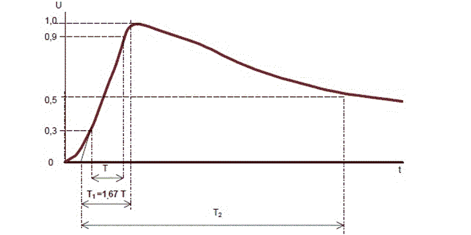
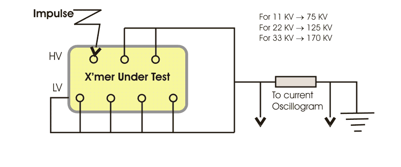

Lighting is a common phenomenon in transmission lines because of their tall height. This lightning stroke on the line conductor causes impulse voltage. The terminal equipment of transmission line such as
power transformer then experiences this lightning impulse voltages. Again during all kind of online switching operation in the system, there will be switching impulses occur in the network. The magnitude of the switching impulses may be about 3.5 times the system voltage.
Insulation is one of the most important constituents of a transformer. Any weakness in the insulation may cause failure of transformer. To ensure the effectiveness of the insulation system of a transformer, it must confirms the dielectric test. But the power frequency withstand test alone can not be adequate to demonstrate the dielectric strength of a transformer. That is why impulse test of transformer performed on it. Both lightning impulse test and switching impulse test are included in this category of testing.
Lightning Impulse
The lightning impulse is a pure natural phenomenon. So it is very difficult to predict the actual wave shape of an lightning disturbance. From the data compiled about natural lightning, it may be concluded that the system disturbance due to natural lightning stroke, can be represented by three basic wave shapes.
1) Full wave
2) Chopped wave and
3) Front of wave
Although the actual lightning impulse disturbance may not have exactly these three shapes but by defining these waves one can establish a minimum impulse dielectric strength of a transformer.
If lighting disturbance travels some distance along the transmission line before it reaches the transformer, its wave shape may approach to full wave.
If during traveling, if flash-over occurs at any insulator of the transmission line, after the peak of the wave has been reached, the wave may become in form of chopped wave.
If the lightning stroke directly hits the transformer terminals, the impulse voltage rises rapidly until it is relieved by a flash over. At the instant of flash - over the voltage suddenly collapses and may form the front of wave shape.
The effect of these wave forms on the transformer insulation may be different from each other. We are not going here in detail discussion of what type of impulse voltage wave forms causes what type of failure in transformer. But whatever may be the shape of lightning disturbance voltage wave, all of them can cause insulation failure in transformer. So lighting impulse test of transformer is one of the most important type test of transformer.
Switching Impulse
Through studies and observations reveal that the switching over
voltage or switching impulse may have front time of several hundred microseconds and this
voltage may be periodically damped out. The IEC - 600060 has adopted for their switching impulse test, a long wave having front time 250 μs and time to half value 2500 μs with tolerances.
The purpose of the impulse voltage test is to secure that the transformer insulation withstand the lightning overvoltage which may occur in service.
The impulse generator design is based on the Marx circuit. The basic circuit diagram is shown on Figure above. The impulse capacitors Cs (12 capacitors of 750 η F) are charged in parallel through the charging resistors Rc (28 kΩ) (highest permissible charging voltage 200 kV). When the charging voltage has reached the required value, breakdown of the sparkgap F1 is initiated by an external triggering pulse. When F1 breaks down, the potential of the following stage (point B and C) rises. Because the series resistors Rs is of low-ohmic value compared with the discharging resistors Rb (4,5 kΩ) and the charging resistor Rc, and since the low-ohmic discharging resistor Ra is separated from the circuit by the auxiliary spark-gap Fal, the potential difference across the spark-gap F2 rises considerably and the breakdown of F2 is initiated.
Thus the spark-gaps are caused to break down in sequence. Consequently the capacitors are discharged in series-connection. The high-ohmic discharge resistors Rb are dimensioned for switching impulses and the low-ohmic resistors Ra for lightning impulses. The resistors Ra are connected in parallel with the resistors Rb, when the auxiliary spark-gaps break down, with a time delay of a few hundred nano-seconds.
The arrangement is necessary in order to secure the functioning of the generator.
The wave shape and the peak value of the impulse voltage are measured by means of an Impulse Analysing System (DIAS 733) which are connected to the voltage divider. The required voltage is obtained by selecting a suitable number of series-connected stages and by adjusted the charging voltage. In order to obtain the necessary discharge energy parallel or series-parallel connections of the generator can be used. In these cases some of the capacitors are connected in parallel during the discharge.
The required impulse shape is obtained by suitable selection of the series and discharge resistors of the generator.
The front time can be calculated approximately from the equation:
For R1 >> R2 and Cg >> C (15.1)
Tt = .R.C.123
and the half time to half value from the equation
T ≈ 0,7.R.C
In practice the testing circuit is dimensioned according to experience.

The test is performed with standard lightning impulses of negative polarity. The front time (T1) and the time to half-value (T2) are defined in accordance with the standard.
Standard lightning impulse
Front time T1 = 1,2 μs ± 30%
Time to half-value T2 = 50 μs ± 20%
In practice the impulse shape may deviate from the standard impulse when testing low-voltage windings of high rated power and windings of high input capacitance. The impulse test is performed with negative polarity voltages to avoid erratic flashovers in the external insulation and test circuit. Waveform adjustments are necessary for most test objects. Experience gained from results of tests on similar units or eventual precalculation can give guidance for selecting components for the wave shaping circuit.
The test sequence consists of one reference impulse (RW) at 75% of full amplitude followed by the specified number of voltage applications at full amplitude (FW) (according to IEC 60076-3 three full impulses). The equipment for voltage and electric current signal recording consists of digital transient recorder, monitor, computer, plotter and printer. The recordings at the two levels can be compared directly for failure indication. For regulating transformers one phase is tested with the on-load tap changer set for the rated voltage and the two other phases are tested in each of the extreme positions.
Connection of Impulse Test

All the dielectric tests check the insulation level of the job. Impulse generator is used to produce the specified voltage impulse wave of 1.2/50 micro seconds wave. One impulse of a reduced voltage between 50 to 75% of the full test voltage and subsequent three impulses at full voltage.
For a three phase transformer, impulse is carried out on all three phases in succession.
The voltage is applied on each of the line terminal in succession, keeping the other terminals earthed.
The electric current and voltage wave shapes are recorded on the oscilloscope and any distortion in the wave shape is the criteria for failure.
 by
by